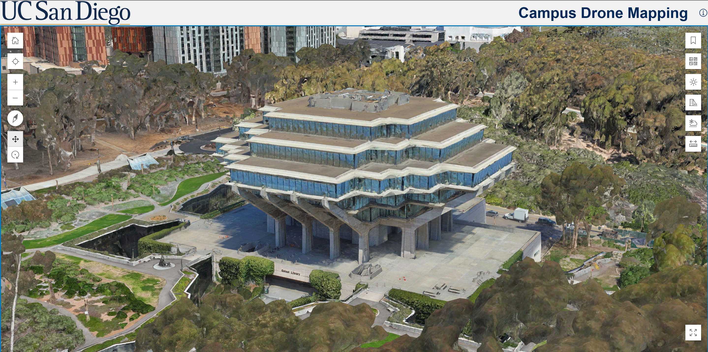
Drone surveying / 3D GIS
UC San Diego · Professional project
A campus, captured in 3D.
Across the team’s campus-scale 3D model
~52Kdrone images captured
550+ground control points captured
22+drone missions flown
Leo Leung · Spatial analyst
I turn spatial data into clear evidence for planners, communities, and better urban decisions. From field surveys to satellite imagery, I connect what’s on the map to what matters on the ground.
01 / Selected work
Maps, diagrams, and 3D scenes.
Fieldwork and Penn coursework, explained through evidence.

Drone surveying / 3D GIS
UC San Diego · Professional project
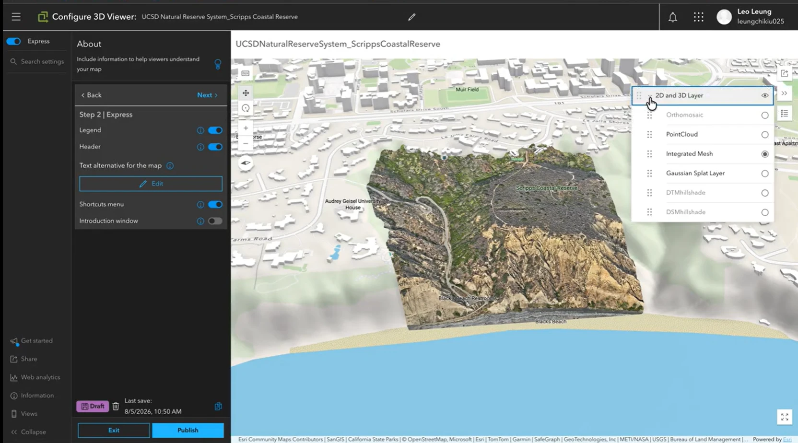
Coastal landscape / 3D visualization
UC San Diego · Professional project
Bringing coastal bluffs, vegetation, and terrain into one scene, with tools to compare mapping products and inspect an elevation profile.
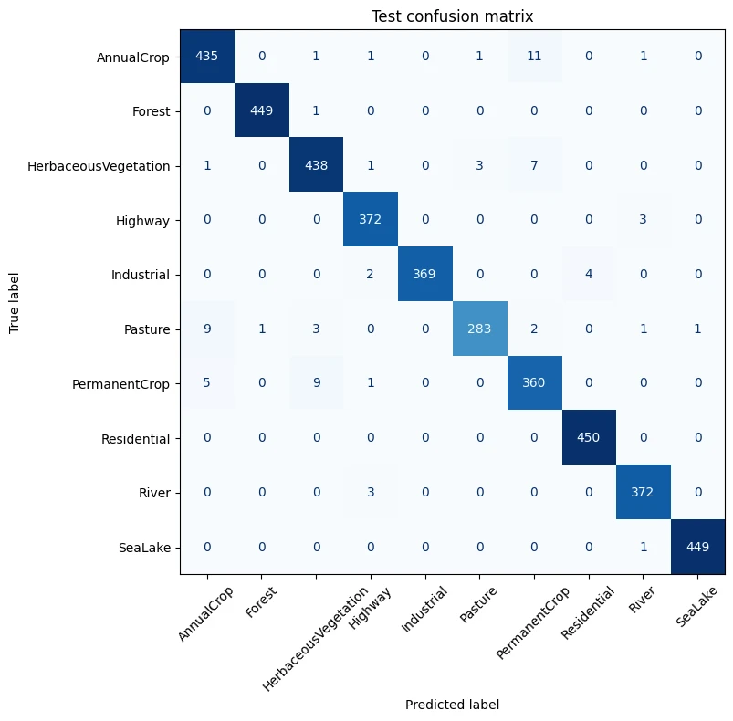
Remote sensing / Machine learning
Penn MUSA 6950 · Academic project
Turning satellite imagery into ten land-cover classes—and testing where a pretrained model improves on a custom CNN.
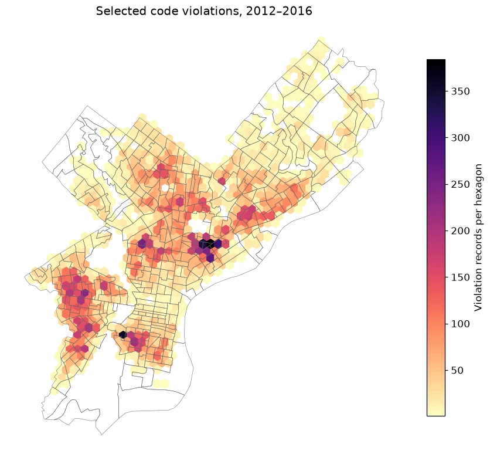
Urban analytics / Spatial equity
Penn MUSA 5500 · Academic project
Connecting tract-level eviction patterns with housing-code records, while keeping geographic association separate from causation.
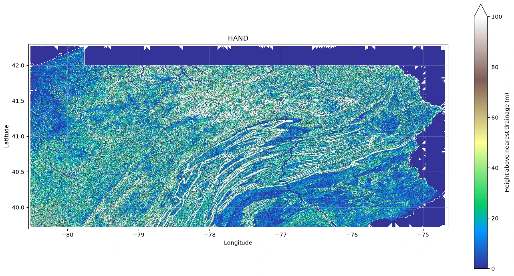
Terrain analysis / Environmental modeling
Penn MUSA 6950 · Academic project
Preparing elevation mosaics and tracing drainage to explore a simplified inundation scenario across Pennsylvania.
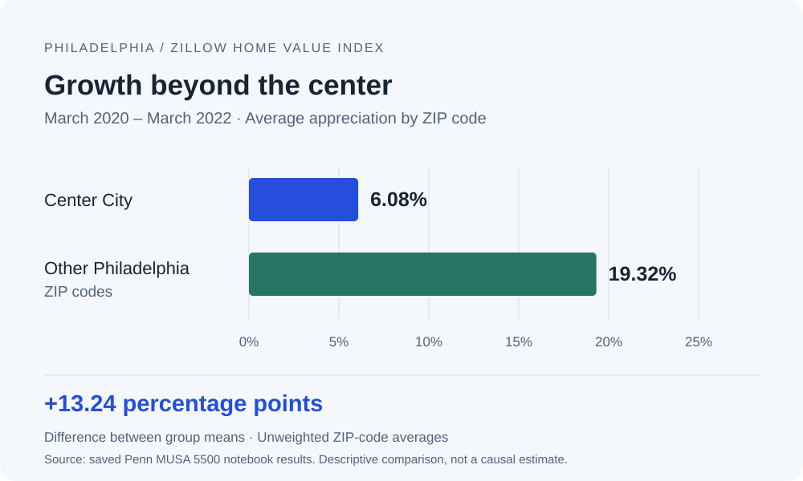
Housing markets / Data visualization
Penn MUSA 5500 · Academic project
Visualizing the difference in ZIP-code home-value appreciation from March 2020 to March 2022 using the notebook’s Zillow results.
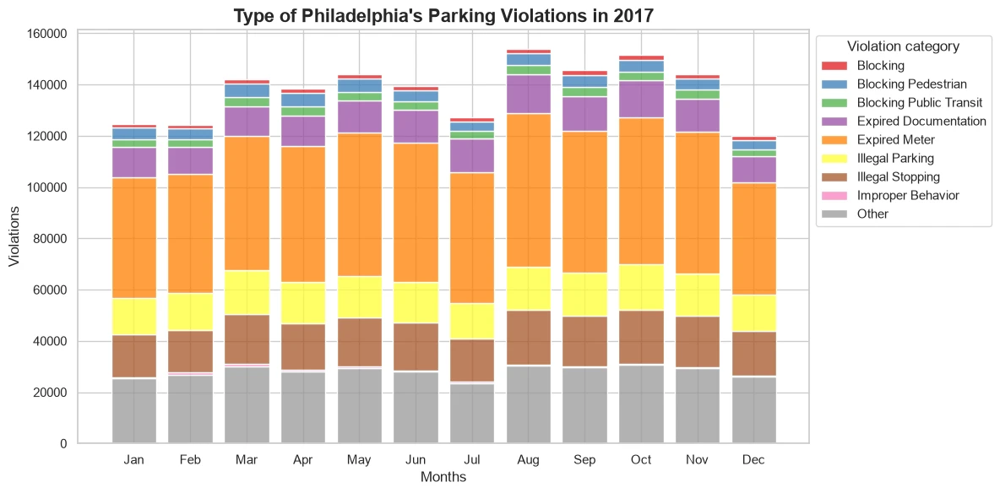
Urban analytics / Recorded enforcement
Penn MUSA 5500 · Academic project
Connecting the timing, location, and categories of recorded parking enforcement through charts and spatial data.
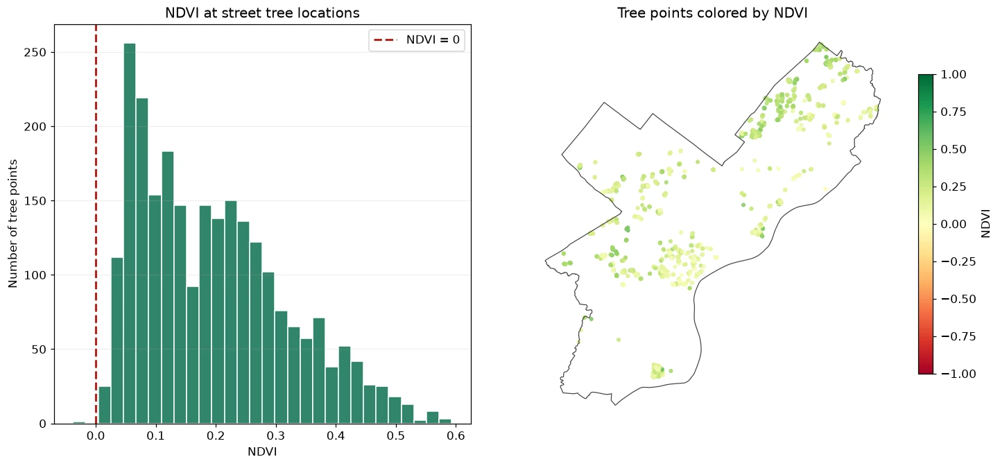
Remote sensing / Urban vegetation
Penn MUSA 5500 · Academic project
Comparing vegetation signals inside Philadelphia and its surroundings, alongside a sample of street-tree locations.
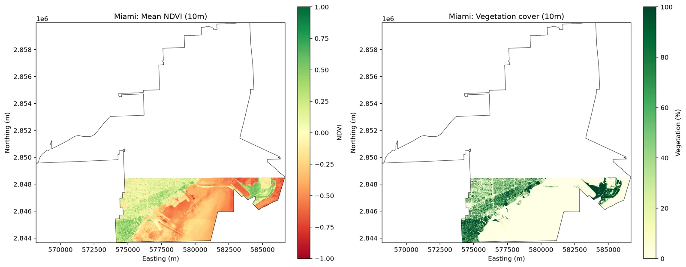
Remote sensing / Raster workflows
Penn MUSA 6950 · Academic project
A windowed raster workflow that summarizes vegetation signals while keeping missing imagery distinct from low vegetation.
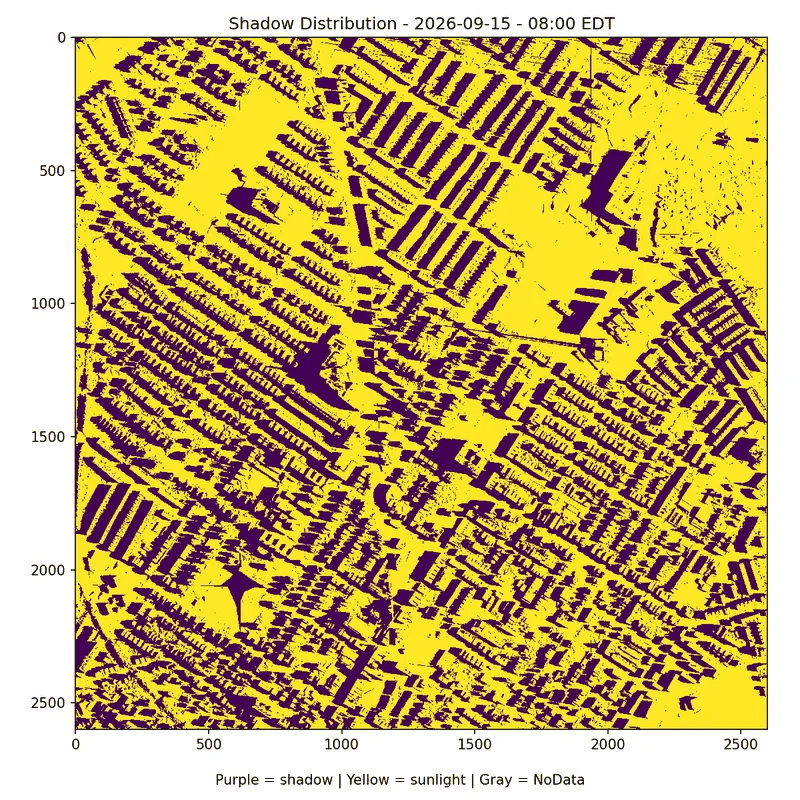
Urban environment / Temporal visualization
Penn MUSA 6950 · Academic project
An animated sequence makes the movement of modeled urban shadows visible, one frame at a time.
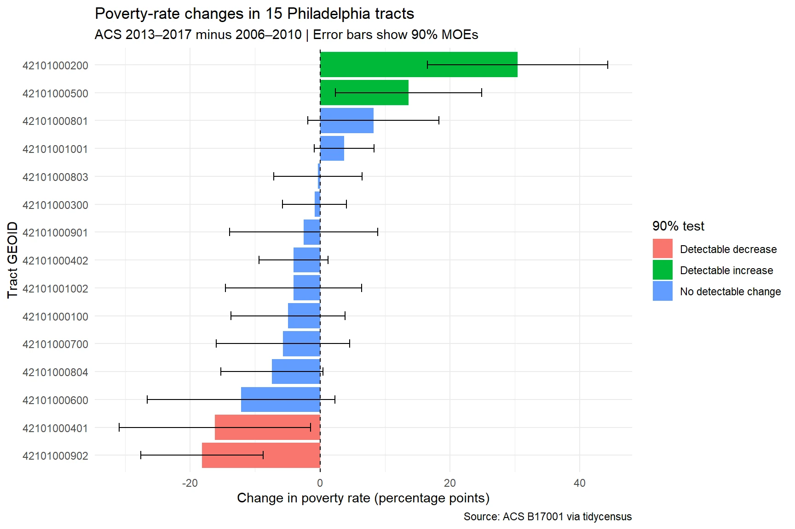
Public policy / Statistical uncertainty
Penn MUSA 5080 · Academic project
Pairing tract-level poverty changes with margins of error to distinguish an apparent change from a statistically detectable one.
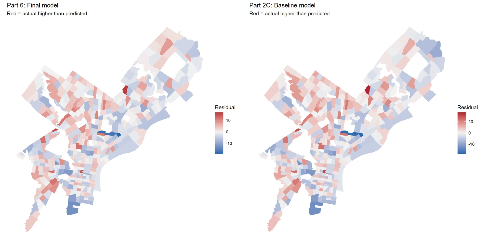
Spatial modeling / Public policy
Penn MUSA 5080 · Academic project
Comparing tract-level prediction models through charts, cross-validation, and maps of where their errors remain.
Showing 12 selected works
02 / Coursework & research
Examining uncertainty in ACS median-age estimates for Florida counties.
Uses R, tidyverse, and tidycensus to compare estimates with their margins of error. The focus is the reliability of the measure, not just its value.
Connecting pedestrian accessibility, safety, and sustainability in San Diego.
Senior research combined GIS analysis with surveys, interviews, and collision data, with findings presented at the 2025 UCSD Urban Expo. The linked Drive document is the research proposal, so its anticipated outcomes are not presented as measured results.
03 / Skills & competencies
From collecting data on the ground to making
complex spatial patterns understandable.
| Competency | Tools & methods | Applied in practice |
|---|---|---|
| Spatial analysis & mapping | ArcGIS Pro · ArcGIS Online · GeoPandas Spatial joins · Cartography · StoryMaps | Philadelphia housing analysis ↗ Tract aggregation and geographic comparison |
| Remote sensing & AI | Rasterio · NumPy · PyTorch NDVI · CNNs · Transfer learning | EuroSAT land-cover classification ↗ Ten classes, held-out evaluation, error analysis |
| Fieldwork & 3D mapping | Field Maps · SiteScan · Reality Studio Drone surveying · Ground control points | UC San Diego campus model ↗ Drone surveys, ground control, and 3D reconstruction |
| Research & communication | R · tidyverse · tidycensus · Matplotlib Survey design · Data visualization · Illustrator | Visual course reports ↗ · Convoy research ↗ Uncertainty, mixed methods, and clear interpretation |
04 / A little about me
I’m Chi Kiu Leung—call me Leo. My work sits at the intersection of urban planning, GIS, and spatial data science.
Studying urban planning at UC San Diego brought me from the classroom into campus fieldwork and pedestrian-accessibility research in the Convoy District. At Penn, I’m building on that foundation through programming, remote sensing, and machine learning.
I’m interested in a practical question: how can better spatial evidence help create more sustainable and equitable places? I like connecting the detail of a site visit with the wider patterns a map can reveal.
View my GIS résuméExperience / In the field
University of California, San Diego
Helped the team capture around 52,000 aerial images across 22+ drone flight sessions and collected ground control points. Processed aerial imagery in SiteScan, Reality Studio, and ArcGIS Pro for orthomosaics and 3D mapping products, including meshes and Gaussian splats.
University of California, San Diego
Built and refined ArcGIS Field Maps survey forms and collected campus asset data, developing the fieldwork foundation for later drone and 3D mapping projects.
Presented findings on walkability, safety, and sustainability in San Diego’s Convoy District at the UCSD Urban Expo.
05 / Let’s connect
I’d love to hear about GIS opportunities, urban research, and projects that make places work better for people.
leungchikiu025@gmail.com ↗